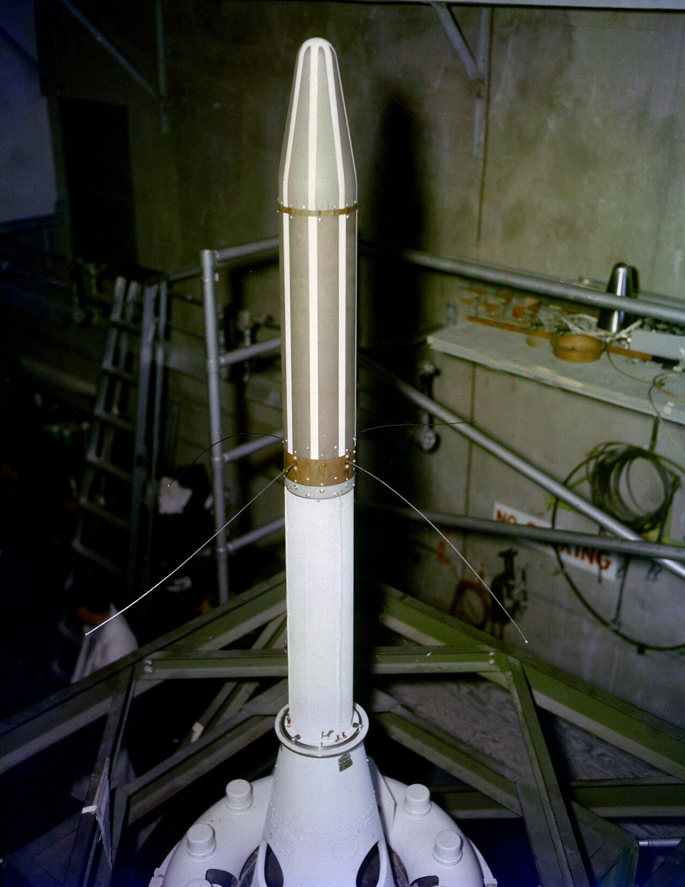
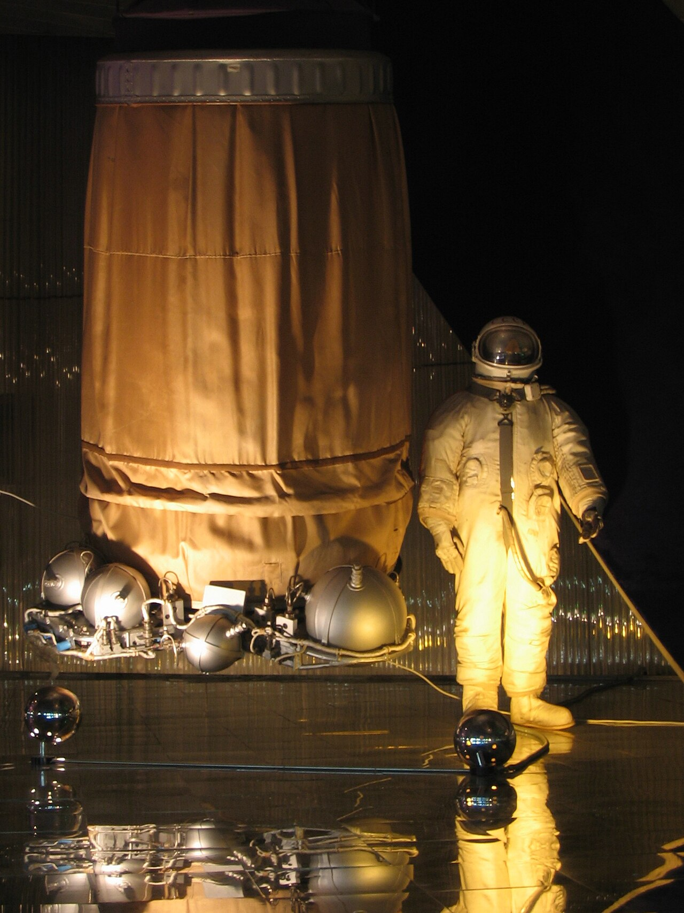
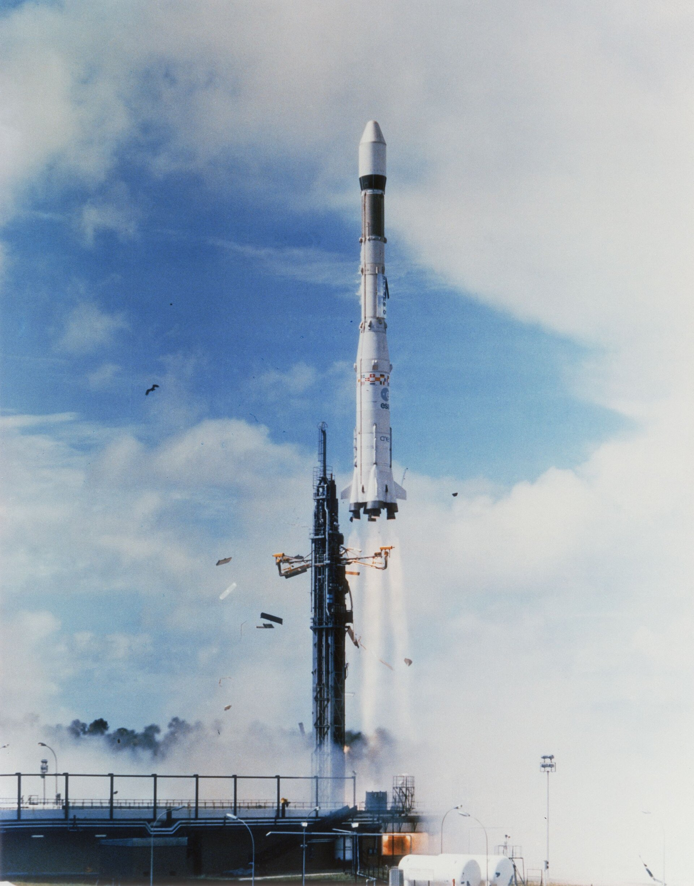

Witamy na stronie o historii lotów kosmicznych
Kalendarium podboju kosmosu: USA, ZSRR i reszta świata
Zdjęcie tła: „Earthrise”, Apollo 8, 1968 — NASA (domena publiczna)O stronie
Cześć witaj na naszej stronie! Jest to strona o historii lotów kosmicznych która przedstawia najważniejsze wydarzenia. Jeśli chcesz się z nami skontaktować i wesprzeć tą społeczność napisz tutaj
Galeria zdjęć





